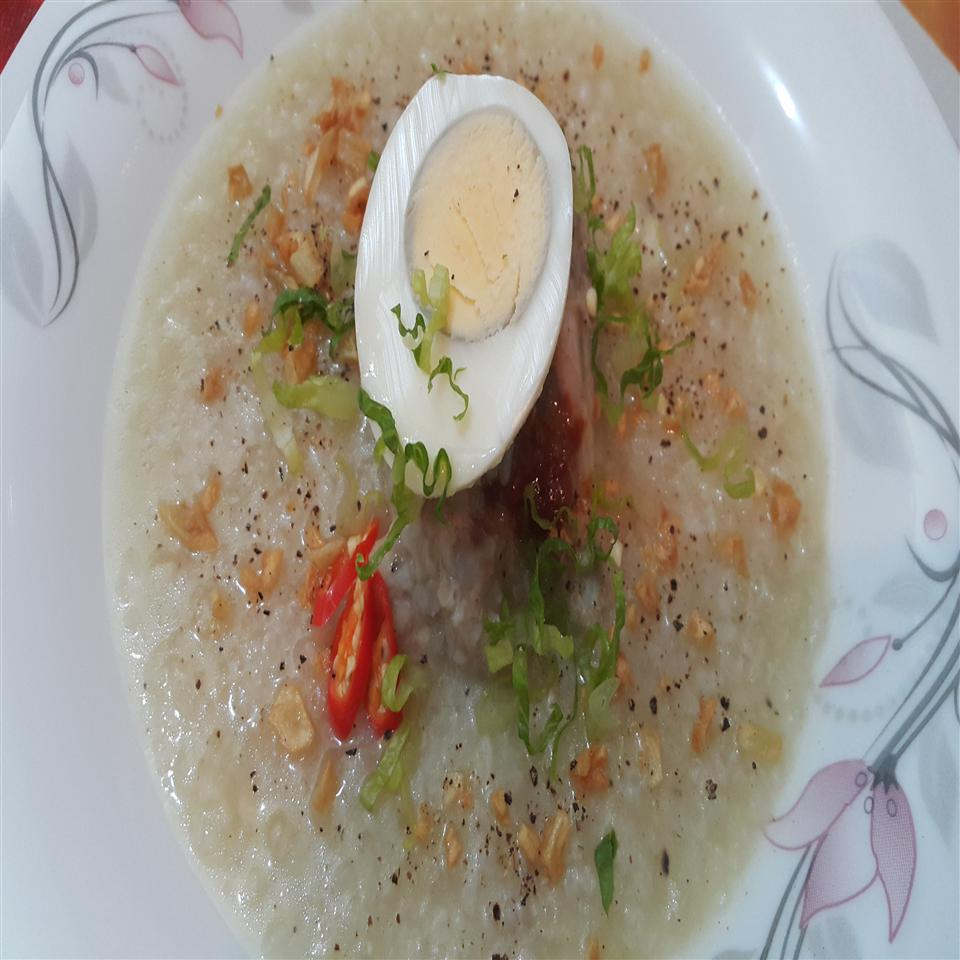

Arroz Caldo

Arroz Caldo is a porridge. It is hot and delicious. Definitely the cure to any illness.
Ingredients
- 1/4 cup vegetable oil, divided
- 1 tablespoon vegetable oil
- 3 tablespoons minced garlic
- 1 cup uncooked glutinous white rice
- 1 cup uncooked jasmine rice
- 3 tablespoons chopped red onion
- 2 tablespoons julienned fresh ginger root
- 1 pound skinless, boneless chicken breast halves, sliced
- salt and pepper to taste
- 6 1/3 cups chicken stock
- 1/4 cup fish sauce
- 5 hard-boiled eggs, chopped
- 3 tablespoons chopped green onion
Steps
- Heat 2 1/2 tablespoons vegetable oil in a skillet over medium heat. Add 1 1/3 tablespoons garlic and cook until golden brown, about 3 minutes.
- Wash glutinous rice and jasmine rice in a bowl. Rinse with water.
- Heat remaining 2 1/2 tablespoons vegetable oil in a large saucepan. Cook red onion, ginger, and 1 1/2 tablespoons garlic until aromatic, about 3 minutes. Add chicken adn cook until brown, about 15 minutes. Stir in rice. Cook 1 minute more. Season with salt and pepper. Pour in chicken stock. Bring to a boil. Reduce heat and let simmer, stirring occasionally, about 5 minutes. Add more chicken stock if desired. Remove from heat.
- Mix in fish sauce. Top with eggs, green onion, and remaining toasted garlic.